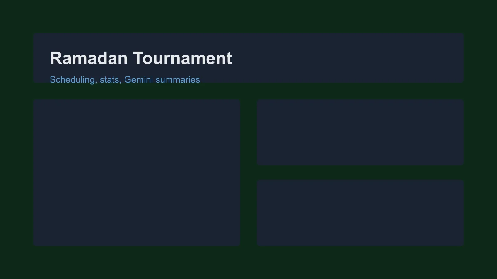
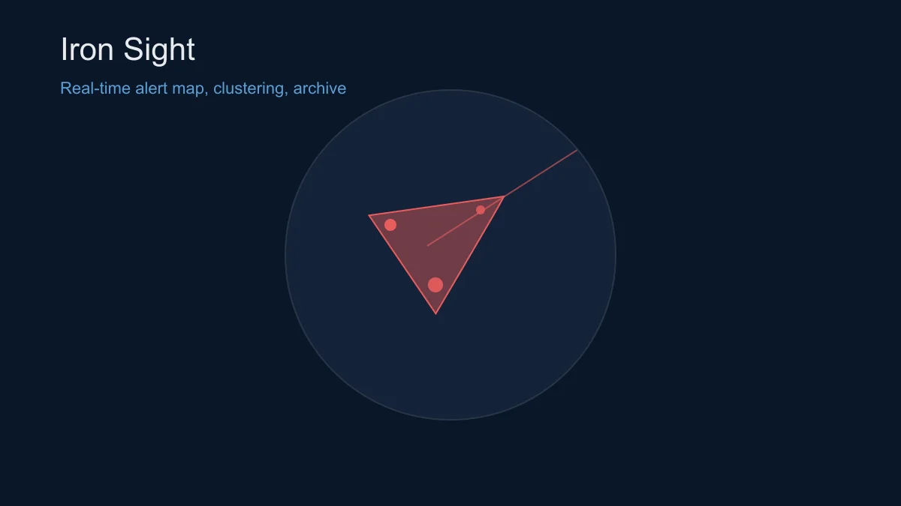
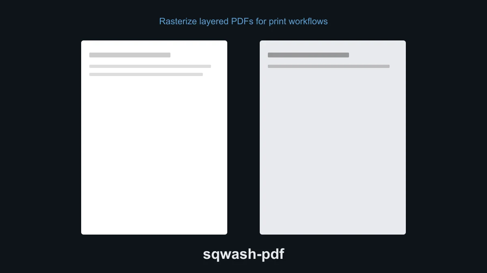
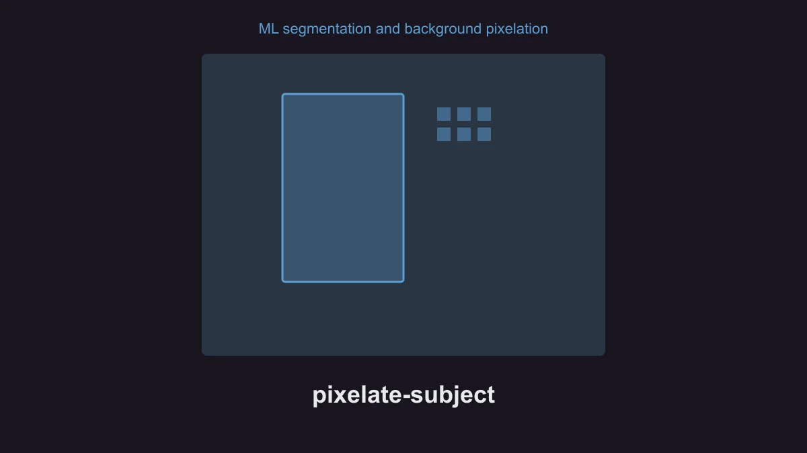

אודות
סטודנט לתואר ראשון בהנדסת תעשייה וניהול (התמחות מדעי הנתונים) במכללת בראודה, כיום מפתח כלי ביקורת לשולחן עבודה ודמויות full-stack במקביל ללימודים.
הרקע שלי כולל שיפור תהליכים, חשיבה של שרשרת אספקה, אופטימיזציה וניתוח נתונים - מעבודה בקומת ייצור ותכנון תאגידי ועד העברת כלי ביקורת מ-VBA ל-Python.
אני בונה אפליקציות שולחן עבודה, שירותי web ואוטומציה לבעיות תפעוליות אמיתיות. כלי AI (סוכני Cursor, RAG, ממשקי Gemini) מאיצים את היישום; ההכשרה בהנדסת תעשייה וניהול קובעת מה למדוד, מה לייעל ומה שווה לשחרר.
איך אני עובד
- גיבוש הבעיה - הגדרת התהליך, האילוצים והמדדים לפני כתיבת קוד (הרגל של IE: למדוד, ואז לשפר).
- יישום - Python, פיתוח full-stack (React, Node, Flask), מעטפת שולחן עבודה (PyWebView), API ושחרורי גרסאות בבקרת מקור.
- כלי AI - Cursor ו-RAG מקומי לפיתוח מבוסס מסמכים; Gemini ו-API דומים כשמוצרים דורשים סיכומים או ניטור - תמיד עם ביקורת אנושית ברורה.
פרויקטים
מומלצים



פיקסול נושא
העלאת תמונה, פילוח נושא ב-ML ופיקסול על הנושא או הרקע.
תוצאה: צינור עריכת תמונות לפרטיות עם backend ב-FastAPI וממשק Vite.
GitHub
אין הדגמה ציבורית
כל הפרויקטים (8 נוספים)
-
ניטור רציף
ניטור חריגות תקופה מול תקופה במסדי נתונים של CaseWare IDEA.
-
task-canopy
מעקב פרויקטים ומשימות לשולחן עבודה עם עץ של שלוש רמות, קישורי ניתוב וממשק RTL בעברית.
-
IACSLWrapper
אינטגרציית Python לניהול רישוי CaseWare IACS באפליקציות ביקורת ב-Windows.
-
DMR³ (Bundle_script)
חבילת מאקרו ל-IDEA: חישוב ימי עסקים, אימות ואנונימיזציה על מערכי נתונים גדולים.
-
RAG
מאגר ידע מקומי עם ChromaDB והטמעות לעיגון תהליכי עבודה של סוכני Cursor.
-
ספריית קבצים קהילתית
אפליקציית שיתוף קבצים לקמפוס: API ב-Flask, ממשק Angular, אימות session ותהליכי אישור מנהל.
-
כלי מסמכים
חילוץ מסמכים מ-workspace, פענוח HTML של Moodle ואינדוקס Chroma אופציונלי לסוכנים.
-
עורך וידאו
אפליקציית Windows לשולחן העבודה ו-CLI לדחיסה, שינוי קנה מידה וחיבור וידאו ב-FFmpeg.
מיומנויות
- תכנות
- TypeScriptNode.jsReactPythonSQLVBA
- תוכנה
- ViteVercelRenderExcelSolidWorks
- נתונים
- MongoDBWekaGoogle ColabPower BI
- שפות
- עברית (שפת אם), אנגלית (רמה גבוהה), ערבית (רמה בינונית)
יצירת קשר
amirlabay@gmail.com
linkedin.com/in/amir-labay
github.com/Amirlabai